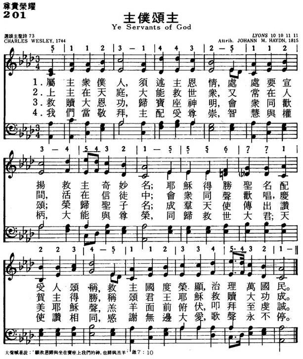
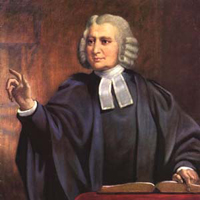

|
|
|
|
词：Charles Wesley
Ye servants of God,
Your Master proclaim,
And publish abroad
His wonderful Name;
The Name all-victorious
Of Jesus extol;
His kingdom is glorious,
And rules over all.
God ruleth on high,
Almighty to save;
And still He is nigh,
His presence we have;
The great congregation
His triumph shall sing,
Ascribing salvation
To Jesus our King.
Salvation to God
Who sits on the throne!
Let all cry aloud,
And honour the Son:
The praises of Jesus
The angels proclaim,
Fall down on their faces,
And worship the Lamb.
Then let us adore,
And give Him His right,
All glory and power,
All wisdom and might,
All honour and blessing,
With angels above,
And thanks never-ceasing,
And infinite love.
|
201主仆颂主
1.属主众仆人，主恩当述说，
处处要宣扬救主奇妙名； 救主过度荣耀，他统治万民， 耶稣得胜圣名，配受人称颂。 2.神高天统治，大能施拯救， 又常在人间，活在信徒中； 会众同声欢唱，庆贺主得胜， 称颂君王耶稣，救赎大功成。 3.救赎的宏恩，归于至高神， 让我众扬声，荣耀圣子名； 赞美救主耶稣，天使歌不停， 羔羊面前俯伏，叩拜至虔诚。 4.我们当敬拜，主配受尊崇， 智慧与权柄，皆归主圣名； 与众天使赞美主的大权能， 感谢无穷大爱，歌声永不停。 |
|
https://www.mred365.cn/szxg/7204.html  https://hymnary.org/hymn/ELW2006/page/1074
|
|
|
|
|


Ye Servants of God https://www.youtube.com/watch?v=3GH0aLQwhRY -
Charles Wesley's edifying hymn of encouragement to God's faithful servants.
https://www.youtube.com/watch?v=lNCSNHMXH8U -
Ye Servants Of God https://www.youtube.com/watch?v=wZ9j3e8_yQc https://youtu.be/91PjrMRHjvs -
Ye Servants of God主仆颂主歌
https://youtu.be/kHgkKkiyEYE -
主僕頌主 基督之家第三家第二堂詩班
https://youtu.be/eht_tkMCjEw
LX1298
Ask Ye What Great Thing
I Know
201主仆颂主
| Text: | You Servants of God |
| Author: | Charles Wesley, 1707-1788 |
| Tune: | LYONS |
| Composer (attributed to): | Johann Michael Haydn, 1737-1806 |

Notes
Scripture References:
st. 1 = Deut. 32:3, Ps.148:13, Ps.145:11-13
st. 3 = Rev. 5:12-14, Rev. 7:10
The year this text was
written, 1744, was a year of political and religious turmoil in Britain.
The newly formed Methodist societies were suspected of being merely
disguised Roman Catholic societies and were accused of attempting to
overthrow the Crown. To strengthen and reassure his Methodist followers,
Charles Wesley (PHH
267) anonymously published Hymns for Times of
Trouble and Persecution (1744). This text, in
seventeen stanzas, was the first of the "Hymns to be Sung in a Tumult."
Of those stanzas, 1 and 4-6 of Wesley's Part I are included; the
battle-song stanzas, which the small but heroic Methodist groups sang in
the face of violent opposition, are omitted.
The text is a hymn of thankful praise to Christ for his victorious reign and for providing salvation for his people. It reveals the cosmic scope of Christ's kingdom (st. I) and helps us to join our voices with the great doxology to Christ, the Lamb, as foretold in Revelation 5:9-14 (st. 24). In the first stanza "servants" refers to all Christians, not just clergy, to those made "to be a kingdom and priests to serve our God" (Rev. 5:10).
Liturgical Use:
A great doxology for festive services such as Easter; with
eschatological preaching during Advent; other services that focus on
Christ's work of redemption and his glory.
--Psalter Hymnal Handbook
Tune Information
| Title: | LYONS |
| Composer (attributed to): | Joseph Martin Kraus |
| Composer (attributed to): | Michael Haydn |
| Meter: | 10.10.11.11 |
| Incipit: | 51123 14432 51123 |
| Key: | A Major/G Major |
| Copyright: | Public Domain |
| Short Name: | Joseph Martin Kraus |
| Full Name: | Kraus, Joseph Martin, 1756-1792 |
| Birth Year: | 1756 |
| Death Year: | 1792 |
Joseph Martin Kraus (b. Miltenberg am Main, Germany, 1756; d. Stockholm, Sweden, 1792)
spent his youth in Germany, but in 1778 moved to Stockholm. He was elected to the Swedish Academy of Music and became the conductor of the court orchestra and eventually the best-known composer associated with the court of Gustavus III. On his travels, Kraus did meet Franz Joseph Haydn, who considered Kraus “one of the greatest geniuses I have met.” Kraus wrote operas as well as many vocal and instrumental works.
Bert Polman
| Short Name: | Michael Haydn |
| Full Name: | Haydn, Michael, 1737-1806 |
| Birth Year: | 1737 |
| Death Year: | 1806 |
Johann Michael Hadyn Austria 1737-1806.

Born at Rohrau, Austria, the son of a wheelwright and town mayor (a very religious man who also played the harp and was a great influence on his sons' religious thinking), and the younger brother of Franz Joseph Hadyn, he became a choirboy in his youth at the Cathedral of St. Stephen in Vienna, as did his brother, Joseph, an exceptional singer. For that reason boys both were taken into the church choir. Michael was a brighter student than Joseph, but was expelled from music school when his voice broke at age 17. The brothers remained close all their lives, and Joseph regarded Michael's religious works superior to his own. Michael played harpsichord, violin, and organ, earning a precarious living as a freelance musician in his early years. In 1757 he became kapellmeister to Archbishop, Sigismund of Grosswarden, in Hungary, and in 1762 concertmaster to Archbishop, Hieronymous of Salzburg, where he remained the rest of his life (over 40 years), also assuming the duties of organist at the Church of St. Peter in Salzburg, presided over by the Benedictines. He also taught violin at the court. He married the court singer, Maria Magdalena Lipp in 1768, daughter of the cathedral choir-master, who was a very pious women, and had such an affect on her husband, trending his inertia and slothfulness into wonderful activity. They had one daughter, Aloysia Josepha, in 1770, but she died within a year. He succeeded Wolfgang Amadeus Mozart, an intimate friend, as cathedral organist in 1781. He also taught music to Carl Maria von Weber. His musical reputation was not recognized fully until after World War II. He was a prolific composer of music, considered better than his well-known brother at composing religious works. He produced some 43 symphonies,12 concertos, 21 serenades, 6 quintets, 19 quartets, 10 trio sonatas, 4 due sonatas, 2 solo sonatas, 19 keyboard compositions, 3 ballets, 15 collections of minuets (English and German dances), 15 marches and miscellaneous secular music. He is best known for his religious works (well over 400 pieces), which include 47 antiphons, 5 cantatas, 65 canticles, 130 graduals, 16 hymns, 47 masses, 7 motets, 65 offertories, 7 oratorios, 19 Psalms settings, 2 requiems, and 42 other compositions. He also composed 253 secular vocals of various types. He did not like seeing his works in print, and kept most in manuscript form. He never compiled or cataloged his works, but others did it later, after his death. Lothar Perger catalogued his orchestral works in 1807 and Nikolaus Lang did a biographical sketch in 1808. In 1815 Anton Maria Klafsky cataloged his sacred music. More complete cataloging has been done in the 1980s and 1990s by Charles H Sherman and T Donley Thomas. Several of Michael Hadyn's works influenced Mozart. Hadyn died at Salzburg, Austria.
John Perry
Notes
LYONS, named for the French city Lyons, appeared with a reference to “Haydn” in volume 2 of William Gardiner’s (PHH 111) Sacred Melodies. However, the tune was never found in the works of Franz Joseph Haydn or those of his younger brother Johann Michael Haydn. Recent research revealed that the tune was composed by Joseph Martin Kraus, a German composer who settled in Sweden and who traveled widely throughout Europe. Die Werke von Joseph Martin Kraus systematisch-thematisches Werkvereichnis, by Bertil H. Van Boer, Jr. (Stockholm, 1988), includes information on Kraus’ “Tema con variazioni (Scherzo),” a work composed around 1785 in London with an incipit that clearly matches the opening measure of LYONS. The work was published as a set of twelve variations for piano and violin in London in 1791. The violin part may have been an addition by another composer, perhaps “G. Haydn,” since a subsequent London edition (c. 1808) was entitled “Sonita with Twelve Variations for the Piano Forte with Violin Accompaniments, composed by G. Haydn.”
Joseph Martin Kraus (b. Miltenberg am Main, Germany, 1756; d. Stockholm, Sweden, 1792) spent his youth in Germany, but in 1778 moved to Stockholm. He was elected to the Swedish Academy of Music and became the conductor of the court orchestra and eventually the best-known composer associated with the court of Gustavus III. On his travels, Kraus did meet Franz Joseph Haydn, who considered Kraus “one of the greatest geniuses I have met.” Kraus wrote operas as well as many vocal and instrumental works.
A bright melody, LYONS is much loved by many congregations. Lines 1,2, and 4 are similar in shape; lines 2 and 4 are identical. The climbing melody and dominant pedal-point of line 3 provides contrast. Sing stanzas 1, 3, and 5 in solid unison and stanzas 2 and 4 in harmony. Use clear, bright accompaniment. Maintain one pulse per bar. LYONS’ opening figure is similar to that of HANOVER (149 and 477), a good alternate tune.
--Psalter Hymnal Handbook, 1987
For the full
discussion of the authorship of this tune, please consult this article:
Dismore, Margaret K. "Lyons: A Tune in Search of Its Composer." The
Hymn 58.2 (Spring 2007): 27-31.
每日一曲《主僕頌主》
2021-03-05 伯大尼微語錄
主的僕人就廣義而言，即所有蒙主寶血救贖的基督徒，都是主的僕人。這是根據出埃及記3:12，神對摩西說：「你將百姓從埃及領來之後，你們必在這山上事奉我。」所以從以色列百姓出埃及的預表，給我們看見，主用寶血救贖我們脫離仇敵之目的，就是要我們事奉祂。
我們的身分是主的僕人，在我們身上必須使神因我們得榮耀。無可厚非的，我們是不配得榮耀，乃是主選召我們，又差派我們、使用我們，我們才得榮耀，因只有主配得榮耀，故當把國度、權柄、榮耀都歸給祂。爲什麼我們必須把榮耀歸給神，因一切榮耀都是屬於神。在使徒行傳12:20－23那裡講到希律王不把榮耀歸給神，而遭神譴責，結局招致死亡。希律偷竊神的榮耀是每個主的僕人之一大鑑戒，求主保守我們，賜給我們一顆清潔的心，不論在任何環境，都將頌讚歸給祂。
Charles Wesley
寫此詩是在1744年，當他和其衛理公會的信徒大遭逼迫的一年。那時英國與法國作戰，人們控告衛斯理等爲天主教徒，祕密爲法國奸細作工。因此他們的聚會，時常被暴徒羣衆所搗毀，他們的傳道人時常被征入伍，甚至衛斯理本人也曾被拖到地方官吏面前。
在受逼迫期間，衛斯理寫了一系列詩歌，題爲「艱難逼迫之聖詩集」，而這首「主僕頌主」乃其中之一首。本詩是根據詩篇93:1-4
及啓示錄7:9-12而寫。此詩宗旨在安慰、鼓勵受苦中的主僕勿懼怕，因我們的神仍坐在寶座上，願救恩、頌讚榮耀尊貴都歸於我們的神，直到永遠。
History of Hymns: “Ye Servants of God”

Charles Wesley
“Ye Servants of God”
By Charles Wesley
The United Methodist Hymnal, 181
Ye Servants of God, your Master proclaim,
And publish abroad his wonderful name;
The name all-victorious of Jesus extol,
His kingdom is glorious and rules over all.
Charles Wesley (1707-1788), one of the most prolific hymn writers of all time, crafted more than 8,900 hymns and poems. Although “Ye Servants of God” may seem like a standard hymn of praise to God, there is a deeper theology within it, which Wesley works into all his writing.
This hymn was first published in 1744 in Hymns for Times of Trouble and Persecution and opened the section of “Hymns to Be Sung in a Tumult.” While not as well known as some other hymns by Charles Wesley, “Ye Servants of God” certainly falls in the second tier of hymns by this poet that appear across ecumenical traditions.
During the time of this hymn, Methodist Societies experienced severe persecution by the Church of England. A sect of the Roman Catholic Church known as the Jacobites was trying to restore the Catholic Church as the ruling church in Britain. Some of the Methodists were confused for Jacobites and thus labeled as anti-crown, leading to their persecution. This hymn was published only one year before the Jacobite Rebellion in 1745 when Charles Edward Stuart, grandson of James II, invaded Britain.
The original hymn had six stanzas, as opposed to the four found in modern hymnals. The omitted stanzas, originally stanzas two and three, are as follows:
The waves of the sea have lift up their voice,
Sore troubled that we in Jesus rejoice;
The floods they are roaring, but Jesus is here,
While we are adoring, He always is near.
Men, Devils engage, the billows arise,
And horribly rage, and threaten the skies:
Their fury shall never our steadfastness shock
The weakest believer is built on a rock.
These stanzas deal heavily with the turmoil and chaos these Methodists and the Wesleys were going through, contextualizing the adversity of the Wesleys’ ministry. Charles and John experienced harrowing storms on their American voyage in 1735, so they were familiar with the trouble of being tossed around on the roaring waves of the sea. They also suffered grave persecutions in the 1740s. Among the worst were accusations of treason against the king. John was assaulted by a law officer and mob while preaching in Sheffield in 1743:
“…The stones often struck me in the face. After the sermon I prayed for sinners, as servants of their master, the devil; upon which the Captain ran at me with great fury, threatening revenge for my abusing, as he called, ‘the King his master.’ He forced his way through the brethren, drew his sword, and presented it to my breast… I threw it open, and, fixing mine eye on his, smiled in his face, and calmly said, ‘I fear God, and honor the King.’ His countenance fell in a moment, he fetched a deep sigh, put up his sword and quietly left the place” (The Journal of Charles Wesley, May 17-August 28, 1743).
This hymn gave people a hymn to sing in a tumultuous time.
In The Companion to the Episcopal Hymnal 1982, Raymond F. Glover suggests that these two stanzas were dropped in the late nineteenth or early twentieth century “for the sake of a more general doxological use of the hymn” (Glover, 1994, 999).
Looking at the deeper elements, Wesley was known to have followed a pattern in his hymn writing. His focus is on God, followed by Christ as Savior. Wesley sets up a path that leads to the goal of heaven or the eternal dimension, using words such as “ceaseless” and “infinite,” while always being grounded in love.
Looking at this hymn, one can see the theological motifs and the structure that Wesley consistently uses. The first stanza begins with God and the praise that God’s servants offer to the deity. By the end of the first stanza, the poet mentions the glorious kingdom that “rules over all,” pointing toward heaven. As the hymn progresses, the focus shifts more from God and God’s acts to Christ in the penultimate stanza. Finally, in the last stanza, everyone should adore God because of God’s works and Christ’s sacrifice. In the third line, Wesley describes the “angels above,” ending the stanza with “and thanks never ceasing and infinite love,” describing the eternal dimension. The words “never ceasing” and “infinite” describe God’s love, which is the grounding and route of God’s acts.
Stanzas three and four quote sections of the Book of Revelation. Stanza three, beginning with “Salvation to God, who sits on the throne,” echoes Revelation 7:10-11: “Salvation to our God which sitteth upon the throne, and unto the Lamb. And all the angels stood round about the throne, and about the elders and the four beasts, and fell before the throne on their faces, and worshipped God” (KJV). Stanza four invites us to join the heavenly pantheon and alludes strongly to another passage in the Book of Revelation: “Blessing, and honor, and glory, and power, be unto him that sitteth upon the throne, and unto the Lamb for ever and ever” (Revelation 5:13, KJV). The song that we are joining is one of “thanks never ceasing” (I Thessalonians 2:13) “and infinite love.”
Not surprisingly, Charles penned some of his most powerful hymns during the 1740s. Fruits of adversity, these hymns were molded in the “dark night of the soul,” leaving works of exquisite strength and substance. Charles Wesley scholar S T Kimbrough, Jr. makes this connection: “‘Ye servants of God’ is an eighteenth-century cry of the soul against oppression and persecution not unlike the twentieth-century outcry against injustice in the African American freedom song, ‘We Shall Overcome.’ It is a call to courage, to stand and be counted, in a time of adversity” (Kimbrough, 1996, 193).
In “Ye Servants of God,” Wesley provided a way for the persecuted Christians of the time to sing a hymn of praise amidst all the turmoil with the reminder of God’s gift of salvation and love. This hymn provides a source of comfort and fortitude for those struggling and a reminder that God’s never-ceasing and infinite love is the most important thing that will remain in the end.
For Further Reading:
The Journal of Charles Wesley, May 17-August 28, 1743. http://wesley.nnu.edu/charles-wesley/the-journal-of-charles-wesley-1707-1788/the-journal-of-charles-wesley-may-17-august-28-1743
Glover, Raymond F. The Hymnal 1982 Companion. Vol. Three B. New York: Church Hymnal Corp., 1994, 999.
Kimbrough, Jr., S T. A Heart to Praise My God. Nashville: Abingdon Press, 1996, 193.
Scott Scheetz is a Master of Sacred Music student at Perkins School of Theology, SMU, where he studies hymnology with Dr. C. Michael Hawn.
https://www.umcdiscipleship.org/resources/history-of-hymns-ye-servants-of-god
Words: Charles Wesley (b. Dec. 18, 1707; d. Mar. 29,
1788)
Music: Hanover, by William Croft (b. _____, 1678; d. Aug.
14, 1727)
Links:
Wordwise Hymns
The Cyber
Hymnal
Note: This hymn was written by Wesley to encourage Christians in a time of great persecution. Stanzas CH-2 and 3, omitted now from our hymn books, specifically address that problem. (You can see a fuller explanation on the Wordwise Hymns link.) The tune Hanover was at first thought to have been written by Handel, but it seems likely Croft was the composer.
Believers are referred to as “servants of God” many times in the Scriptures. Both the Old Testament Hebrew (ebed) and New Testament Greek (doulos), identify one who is a willing slave of the Lord. Moses is described as “the servant of God” more than a dozen times (e.g. I Chron. 6:49; Rev. 15:3). The Apostle Paul likewise speaks of himself this way–often at the beginning of his letters (e.g. Rom. 1:1; Phil. 1:1; Tit. 1:1). Other apostles do the same (Jas. 1:1; II Pet. 1:1; Jude 1:1).
The people of Israel are described as “the servants of the Lord” (Isa. 54:17), and a similar expression is used of Christians. We are to be “not lagging in diligence, [but] fervent in spirit, serving the Lord” (Rom. 12:11), “bondservants of Christ, doing the will of God from the heart” (Eph. 6:6). Though we have freedom in Christ, we should “not [be] using liberty as a cloak for vice, but as bondservants of God” (I Pet. 2:16). As Paul’s ministry illustrates, we ought to be “serving the Lord with all humility (Acts 20:19), since to do so is a great privilege, granted by His grace.
The Bible teaches (Heb. 13:15-16), and Wesley’s hymn affirms, that as servants of God we have both a manward and Godward responsibility. (The call to love God and love others fits this dual emphasis, Matt. 22:37-39.) To put it another way, we could say that the duties of the church, and of the servants of Christ individually, involve three “E’s.” We are to exalt the Saviour, edify (build up) the saints, and evangelize sinners.
In our ministry to others, we are to share the gospel and other truths of God’s Word, both with our fellow-believers, and with the unsaved (II Tim. 4:2; I Pet. 3:15; cf. Acts 20:20).
CH-1) Ye servants of God, your Master proclaim,
And publish abroad His wonderful name;
The name all victorious of Jesus extol,
His kingdom is glorious and rules over all.
CH-4) God ruleth on high, almighty to save,
And still He is nigh, His presence we have;
The great congregation His triumph shall sing,
Ascribing salvation to Jesus, our King.
In addition to our witness to others, our Godward responsibility (which will continue on through eternity) is to praise and glorify Him (Ps. 103:1-2; 107:1-2; Col. 3:16; Rev. 19:5).
CH-5) “Salvation to God, who sits on the throne”
Let all cry aloud and honour the Son;
The praises of Jesus the angels proclaim,
Fall down on their faces and worship the Lamb.
CH-6) Then let us adore and give Him His right,
All glory and power, all wisdom and might;
All honour and blessing with angels above,
And thanks never ceasing and infinite love.
Questions:
1) What do you believe is the greatest hindrance in our ministering
effectively to others?
2) What would it take for us to praise the Lord more, and be more thankful, day by day?
Links:
Wordwise Hymns
The Cyber Hymnal
https://wordwisehymns.com/2011/11/28/ye-servants-of-god/